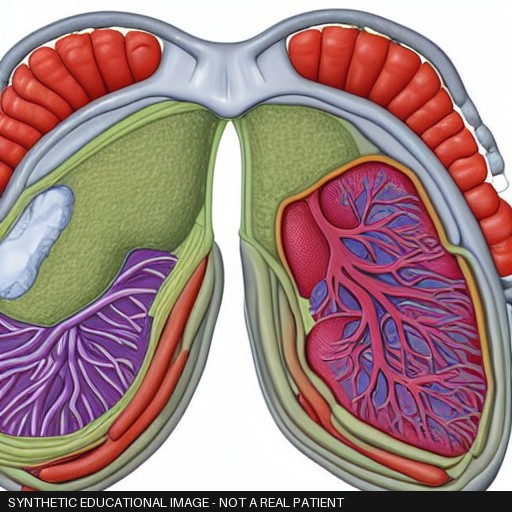
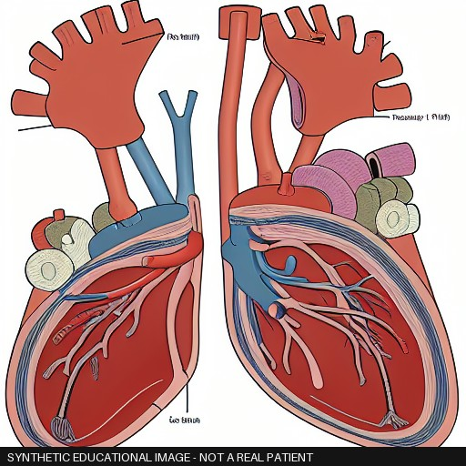
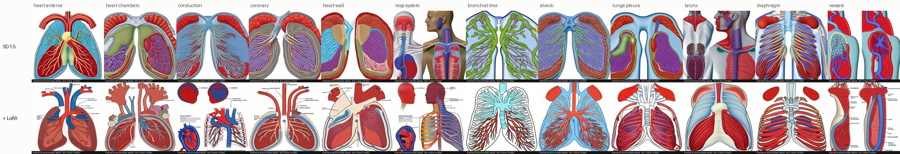

A pipeline that writes exam-style questions and teaching images from an open anatomy textbook, checks every item automatically, and measures how far those checks can be trusted. Everything runs on one laptop GPU.
Recollia builds exam questions, clinical cases and teaching images for medical students, generated with AI and checked by doctors. A wrong answer key or a mislabeled artery teaches the wrong medicine, so the hard part is knowing which generated items are safe to show a student.
This project builds that loop at small scale. It generates multiple-choice questions from two chapters of Anatomy and Physiology 2e (the heart and the respiratory system), cites each one to the exact paragraph it came from, and runs it through 21 automatic checks. It does the same for teaching images, with Stable Diffusion and a LoRA trained on the book's own drawings.
Then it measures the checks themselves: against a blind human review, against defects planted on purpose, against the textbook authors' own questions, and against a second judge model. The numbers that come out of that are the real result.
questions, one per passage, with 0 schema failures and 0 retries
cited paragraph ids that resolve on openstax.org
auto-rejected by the gate; 14.6% once the judge's plausibility check is dropped
of judge verdicts flipped when only the option order was reversed
teaching images, 48 from base SD 1.5 and 48 with the OpenStax LoRA, all stamped synthetic
images the vision model rejects when told the subject, against when it is not told
Every number on this page comes from reports/metrics.json in the repo, which CI rebuilds from the committed data on every push.
Each step reads files from the step before and appends its results to JSONL files under runs/. If a run stops halfway, running it again skips what is already done. The SQLite database behind the review screen and the API is only an index, rebuilt from those files. Times and GPU energy are measured, not estimated: energy comes from the NVIDIA driver's own counter.
Fetch the book's CNXML source from GitHub at a pinned commit, clean it, and pack paragraphs into 151 passages of 71 to 319 words. Also extract the authors' 57 review questions.
One question per passage, forced into a JSON schema with stem, four options, key, explanation, evidence quote and Bloom level. Recall and reasoning alternate; options are shuffled with a seed.
Deterministic checks for item-writing flaws, cues and evidence quotes, plus embedding search for citations, duplicates and copies of the book's own questions.
Does the passage entail the answer statement, and does it entail any distractor swapped into it?
A different model family answers each question blind, audits every option against the passage, and tries it with no passage and with the options alone.
The same audit with the generator as judge, to look for self-preference.
The textbook's 57 questions go through the same checks, to see how often the checks reject questions written by people.
The 23 questions that passed every check are broken on purpose in six known ways, giving 138 mutants, and re-checked.
A blind review screen: the reviewer sees the question and the highlighted source, never the automatic verdict.
Recompute every number into reports/. A release writes the accepted questions once, with a sha256 for every file.
108 figures from chapters 19, 20 and 22. 12 are credited to third parties and 1 file is broken, so they are left out, along with 39 charts, tables, graphs and photos. 56 anatomical drawings remain.
12 subjects, from the heart's chambers to alveoli, times 4 seeds. Every image gets a visible "SYNTHETIC EDUCATIONAL IMAGE" banner and matching EXIF metadata.
Rank 8 on the UNet's attention layers, 1.6 million trainable parameters, 1,200 steps. No horizontal flips, because a mirrored heart is wrong anatomy.
The same prompts and the same seeds as the base images, so any difference comes from the LoRA.
A CLIP score, then a vision model asked twice: once told what the image should show, once blind. The blind answer is tested against the target organ and the book's vocabulary.
Base and LoRA images mixed in a fixed random order, never labelled by arm, with a note field for what a doctor would correct.
runs/gen-v1/ 151 questions, every check result, run.json with model digests and energy runs/book-v1/ the textbook's 57 questions through the same checks runs/stress-v1/ 138 planted-defect questions runs/images-v1/ 96 images, LoRA weights, image checks, training log data/reviews/ every human decision, one append-only file per reviewer reports/ results.md, metrics.json, figures (rebuilt by CI)
A question auto-passes only if every hard check passes. Soft checks are recorded and scored against human review, but never block. The split was fixed before any review, so the gate cannot be tuned to the answers.
| Kind | Checks | What they catch | Failed on |
|---|---|---|---|
| Rules | options distinct, all/none of the above, stem leak, evidence in source; text reference, negative stem, absolute terms, length cue, statement consistent, numeric grounding, key terms in source | Item-writing flaws from NBME-style guidance, cues that give the answer away, invented evidence | text reference 25.8% |
| Retrieval | duplicate; citation retrieval, book overlap | Near copies, questions that drift from their passage, copying the book's own questions | citation 8.6% |
| NLI | answer entailed, distractors not entailed | An answer the passage does not support, or a distractor it also supports | 38.4% / 37.1% |
| LLM judge | blind solve, answer grounded, single correct, distractor quality; stem clear | Wrong keys, two defensible answers, throwaway distractors | distractor quality 78.8% |
| Diagnostics | closed book, options only, recall or reasoning | Questions answerable without the passage, options that leak the answer | 75.5% / 53.6% solved |
23 questions that passed every check, each broken in one known way.
The gate catches the defects, but not always for the right reason. Shown an unrelated passage, the judge still called the key supported 30% of the time; NLI caught 96% of those.
Share of questions each judge passes. No self-preference: the generator was slightly harsher. But the two agree on the overall verdict at kappa 0.09, barely above chance.
| Method | What it shows | Result so far |
|---|---|---|
| Blind human review | Precision, recall and kappa for the gate and for each check | Waiting on the review |
| Planted defects | Whether a check notices a defect whose answer is known | 100% on four defect types, 65% on a paraphrased second answer |
| Textbook control set | A floor on false alarms: questions written by the book's authors | 89.5% rejected, so the gate is far too strict |
| Second judge | Self-preference, and whether two judges agree at all | No self-preference; kappa 0.09 between judges |



All 12 subjects at seed 11: base in the top row, LoRA below. Scroll sideways on a phone.
| Part | What | Why this one |
|---|---|---|
| Source | OpenStax Anatomy and Physiology 2e, CNXML at a pinned commit | Openly licensed (CC BY-NC-SA 4.0), versioned, with paragraph ids a citation can link to |
| Generator | qwen2.5 7B instruct, 4-bit, through Ollama | Fits a 6 GB GPU fully; JSON schema output |
| Judge | llama3.1 8B instruct, 4-bit | A different model family from the generator |
| NLI | DeBERTa-v3 base cross-encoder | A non-LLM second opinion on grounding |
| Retrieval | bge-small embeddings and FAISS | Citations, duplicates, the retrieval eval |
| Images | Stable Diffusion 1.5 (fp16) with a LoRA trained through PEFT and diffusers | Trains and runs in about 2 GB of VRAM |
| Image checks | LAION CLIP ViT-B/32 and qwen2.5-VL 3B | Cheap alignment score and a vision model that fits next to SD |
| Storage | Append-only JSONL, with SQLite through SQLAlchemy as an index | Every result and decision is diffable and auditable in git |
| Apps | FastAPI for the API, Streamlit for the review screen | Review and serving without a GPU |
| Measurement | NVML energy counter, Wilson intervals, Cohen's kappa | Cost and agreement are measured, not guessed |
| Engineering | Python 3.11, uv, pytest (48 tests), ruff, Docker, GitHub Actions | CI rebuilds the report and fails if one byte changes |
| Hardware | RTX 4050 Laptop GPU, 6 GB VRAM, 16 GB RAM | Everything above ran on it |
To start the review on the laptop:
uv run medquiz reviewuv run medquiz report && uv run medquiz release 0.1.0